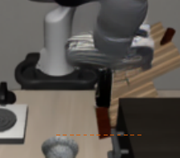
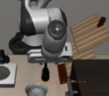
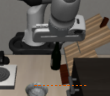
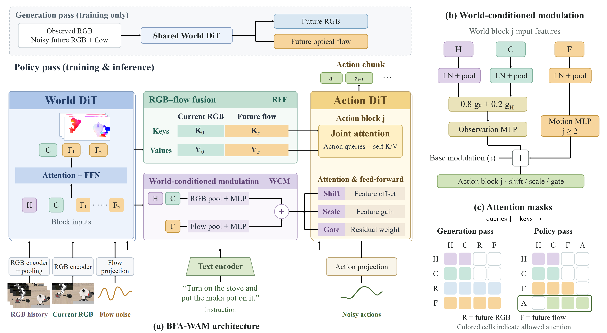

RGB–flow fusion RFF
Current RGB features locate the gripper, objects, and goal. Features trained to predict future optical flow describe where motion is expected. Each action query attends to both sets of features together.
BFA-WAM combines what the robot sees with how objects are likely to move to guide its next actions.
LIBERO-Plus success rose from 72.1% with future RGB to 81.1% with future flow.
LIBERO-Goal



World action models (WAMs) use predictive world representations to guide robotic action generation. However, appearance-oriented prediction supervises motion only indirectly, while token-wise attention does not explicitly turn world information into shared modulation of action-layer updates. We introduce BFA-WAM, a framework that combines explicit future-motion supervision with world-conditioned action refinement.
RGB–flow fusion (RFF) allows action queries to attend jointly to current RGB features and flow-supervised future features, linking anticipated displacement to visible objects and their spatial context. The world model jointly learns future RGB and optical-flow prediction, with an additional one-step flow reconstruction objective supervising future-motion features under the input conditions used at deployment.
Complementing token-wise feature retrieval, world-conditioned modulation (WCM) uses separate observation and motion branches to summarize observed RGB and future-flow features. These summaries produce layer-wise shifts, scales, and gates shared across action positions, conditioning action refinement on the observed scene and anticipated motion. At inference, a single world-model pass supplies both the attention cache and modulation residuals, which are reused throughout action denoising without decoding future frames or estimating optical flow online. Extensive experiments across multiple benchmarks demonstrate the strong performance of BFA-WAM.
Method
At each replan, the world model processes the current scene, observation history, and future-motion slots once. The action model reuses those features throughout denoising.

Current RGB features locate the gripper, objects, and goal. Features trained to predict future optical flow describe where motion is expected. Each action query attends to both sets of features together.
One branch summarizes the observed scene and another summarizes anticipated motion. Their outputs adjust shifts, scales, and gates in each action layer, sharing guidance across the action sequence.
Rollouts
Both policies receive the same instruction. BFA-WAM transfers the soup can first, then places the cream cheese box. Fast-WAM manipulates the box and leaves the can on the table.
“Put both the alphabet soup and the cream cheese box in the basket.”
External-camera keyframes sampled independently from each rollout. Times indicate video playback time.
Full figure PDFResults
The same architecture is evaluated on language-conditioned tasks, coordinated bimanual manipulation, and seven kinds of distribution shift. The LIBERO-trained policy transfers directly to LIBERO-Plus.
Mean time per policy call after warm-up on NVIDIA H20. BFA-WAM-Fast uses two action denoising steps. The standard model uses ten.
| Policy | Latency | LIBERO-Plus success rate |
|---|---|---|
| Fast-WAM | 299.3 ms | 49.5% |
| BFA-WAM | 524.9 ms | 81.1% |
| BFA-WAM-Fast | 194.3 ms | 79.3% |
Citation
The citation will be updated with the arXiv identifier.
@misc{bfawam2026,
author = {Fengyuan Liu and Fu Rong and Shaoyu Chen and Hui Sun and Qian Zhang and Lefei Zhang},
title = {{BFA-WAM}: Bridging Future Motion and Robot Action Generation},
year = {2026},
note = {Manuscript}
}